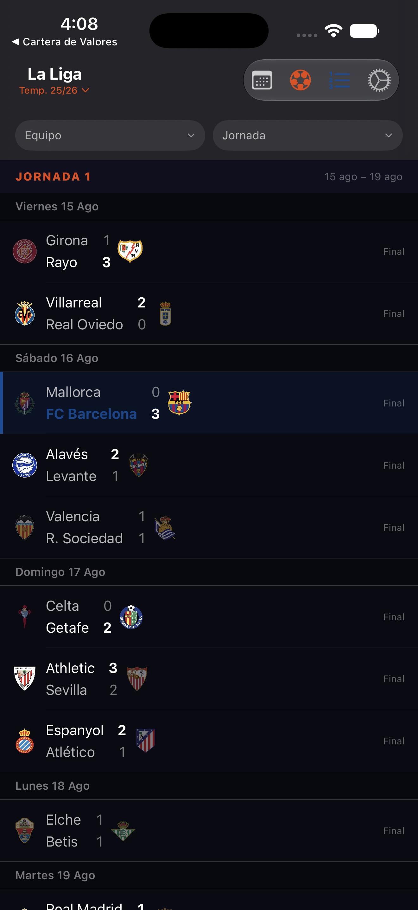
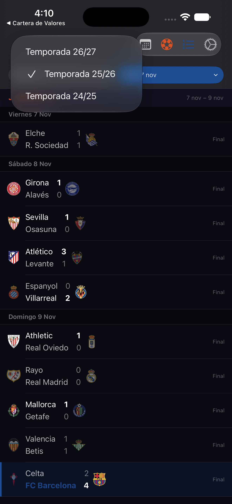
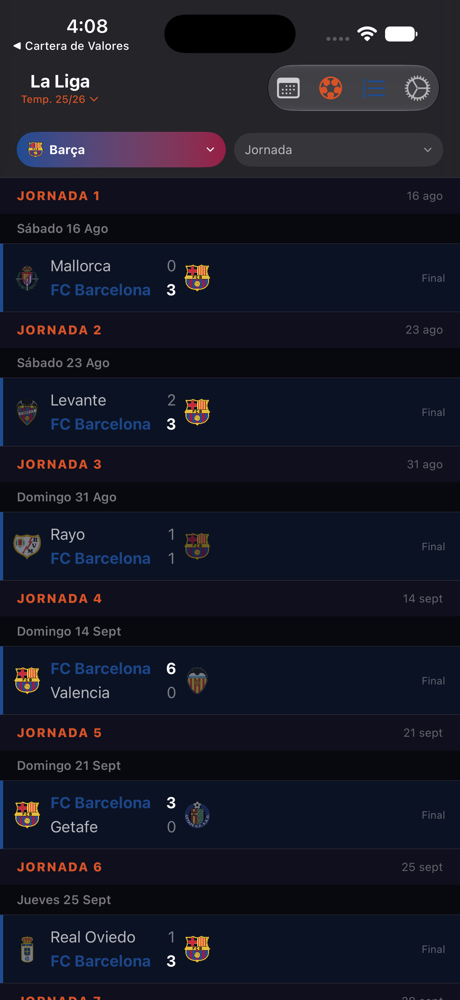
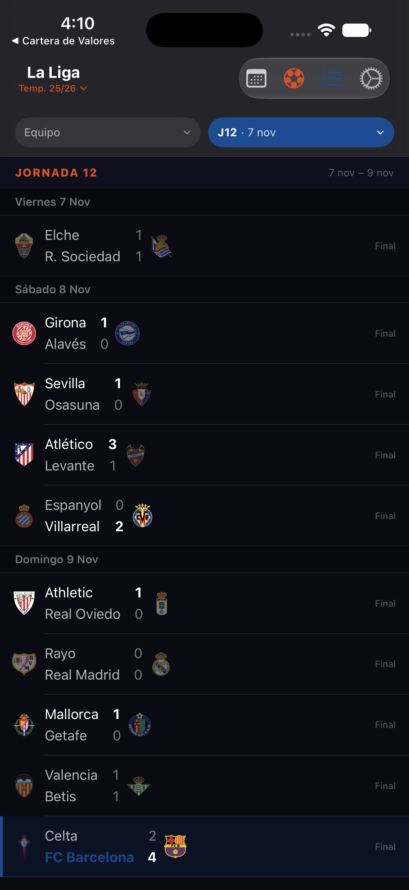
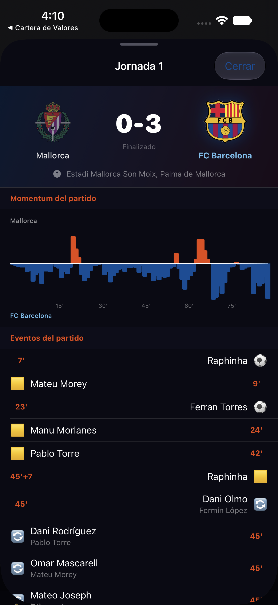
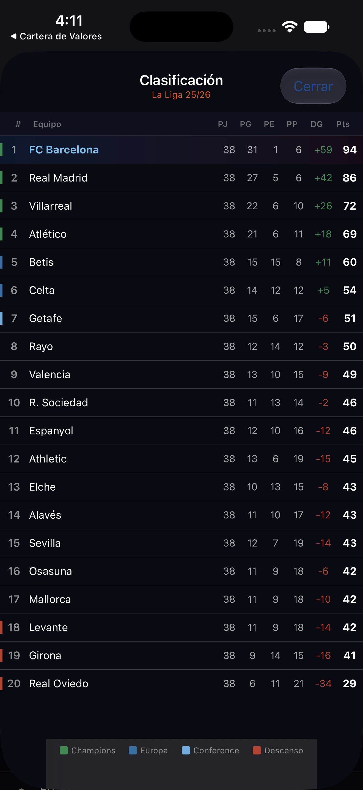
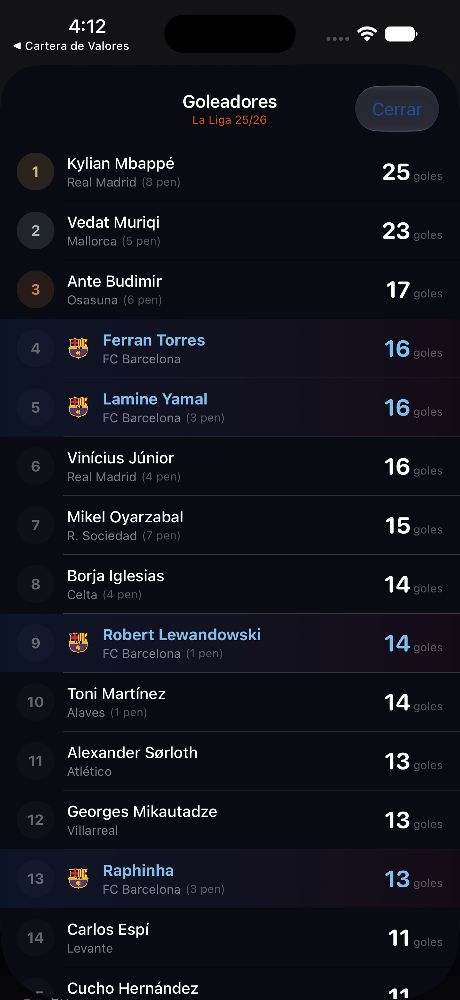
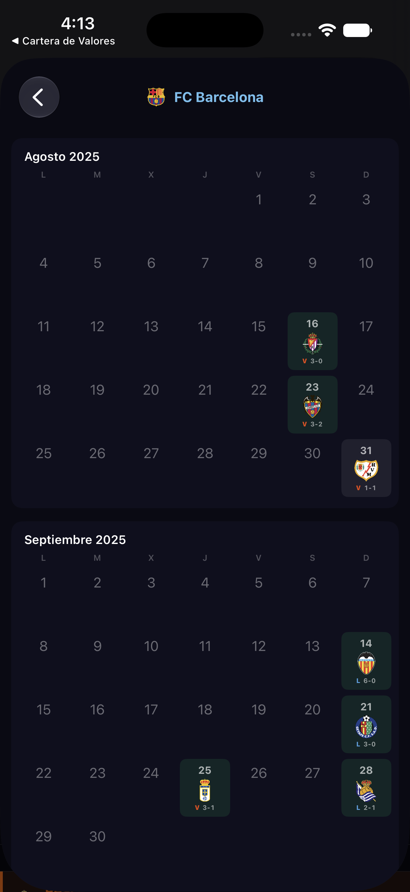
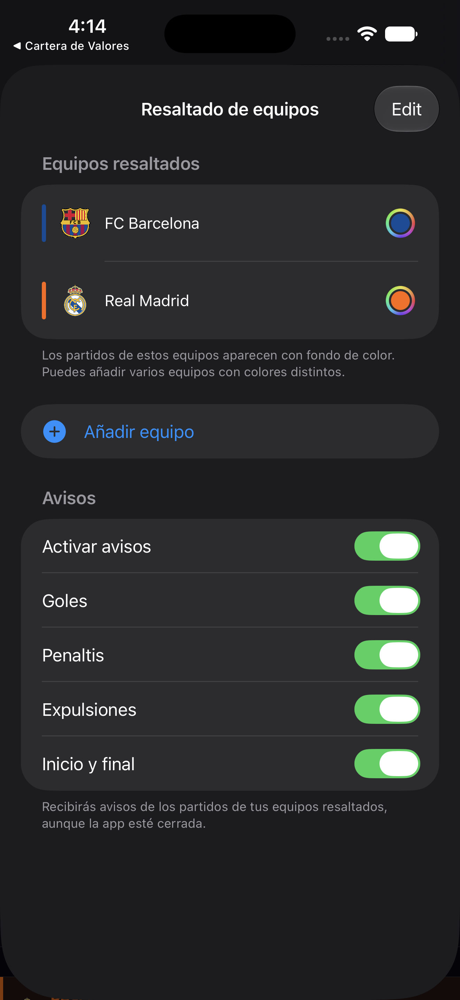

Al abrir la app aparece el calendario completo de La Liga ordenado por jornadas. Cada jornada agrupa los partidos de los días en que se disputa, mostrando fecha, equipos, resultado y canal de televisión.
La app se desplaza automáticamente a la jornada del día actual o, si no hay partidos ese día, a la siguiente jornada programada. Esto hace que siempre veas lo más relevante al abrir la app sin tener que buscar.
Los partidos de los equipos que hayas marcado como favoritos aparecen con una barra de color lateral y un fondo tintado. En el ejemplo, FC Barcelona aparece destacado en azul.
Los datos se actualizan automáticamente cada vez que abres la app. También puedes forzar la actualización deslizando hacia abajo (pull-to-refresh). Si no hay conexión, la app usa los datos de la última sesión.

La app incluye los datos de tres temporadas de La Liga: 26/27, 25/26 y 24/25. Puedes cambiar entre ellas en cualquier momento sin reiniciar la app.
Toca el título central del toolbar — donde aparece "La Liga" y debajo la temporada activa en naranja. Se despliega un menú con las tres opciones disponibles. La temporada seleccionada aparece marcada con un ✓.

Bajo el toolbar hay una barra de filtros con dos selectores que puedes combinar libremente. Cuando un filtro está activo, su cápsula cambia de color (fondo degradado azul-rojo para equipo, azul sólido para jornada).


Toca la cápsula "Equipo" para ver el listado de todos los equipos de la temporada. Al seleccionar uno, la vista muestra únicamente los partidos de ese equipo a lo largo de toda la temporada (todas las jornadas juntas). El chip adopta el degradado azul-rojo con el escudo del equipo.
Toca "Jornada" para ver el listado de las 38 jornadas con su fecha aproximada. Al seleccionar una, la vista muestra todos los partidos de esa jornada. La cápsula muestra el número de jornada y la fecha de inicio.
Toca el selector activo y elige "Todos los equipos" o "Todas las jornadas" para volver a la vista completa. Al quitar ambos filtros, el scroll vuelve automáticamente a la jornada actual.
Toca cualquier partido de la lista para abrir su ficha completa. La ficha aparece como un panel deslizante desde la parte inferior.
| Símbolo | Evento |
|---|---|
| ⚽ | Gol |
| ⚽ (p) | Gol de penalti |
| ⚽ (pp) | Gol en propia puerta |
| 🟨 | Tarjeta amarilla |
| 🟥 | Tarjeta roja / doble amarilla |
| 🔄 | Sustitución (entra · sale) |
| ❌ | Penalti fallado |
En partidos ya terminados el panel se abre a pantalla completa para mostrar todos los datos. En partidos pendientes se abre a media pantalla (puedes arrastrarlo hacia arriba para expandirlo).

Toca el icono ≡ (lista numerada) del toolbar para ver la clasificación completa de la temporada activa.
Cada posición lleva un indicador de color según la zona de clasificación:
Los equipos resaltados aparecen con su nombre en color dentro de la tabla.

Toca el icono del balón ⚽ en el toolbar para ver el ranking de máximos goleadores de la temporada seleccionada.
Los jugadores de los equipos que hayas marcado como favoritos aparecen con su nombre y escudo en el color del equipo resaltado (en el ejemplo, los jugadores del FC Barcelona aparecen en azul).

Toca el icono del calendario en el toolbar para ver todos los partidos de la temporada en formato de calendario mensual, con la opción de seleccionar cualquier equipo.
Cada mes muestra los días del mes con los partidos marcados directamente en el día correspondiente. Los días con partido muestran el escudo del equipo rival y el resultado (si el partido ya se ha disputado).
Toca el nombre del equipo en la parte superior para cambiar y ver el calendario de cualquier otro equipo de la liga.

Toca el icono de ajustes ⚙ en el toolbar para personalizar la app: qué equipos resaltar y qué notificaciones recibir.
Los equipos resaltados aparecen destacados en la lista de partidos (barra lateral de color y fondo tintado) y en la clasificación y goleadores. Puedes añadir tantos equipos como quieras, cada uno con su propio color.
Los avisos push te informan en tiempo real de los eventos clave de los partidos de tus equipos resaltados, aunque la app esté cerrada. El backend en el NAS monitoriza todos los partidos de La Liga cada 30 segundos y envía la notificación en cuanto se produce el evento.
Activa el interruptor Activar avisos y elige qué eventos quieres recibir:
| Aviso | Qué notifica | Ejemplo |
|---|---|---|
| Goles | Cada gol marcado (incluye propios) | ⚽ GOL (23') · Raphinha · Barça 1–0 Real Madrid |
| Penaltis | Goles de penalti y penaltis fallados | ❌ Penalti fallado (55') · Mbappé · Real Madrid · 0–1 |
| Expulsiones | Tarjeta roja o doble amarilla | 🟥 Expulsión (67') · Vinicius · Real Madrid · 1–2 |
| Inicio y final | Pitido inicial y resultado final | 🏁 Partido terminado · FC Barcelona 3–1 Real Madrid |
